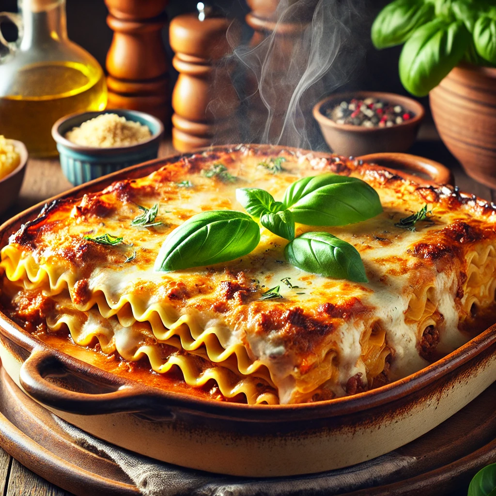

Descubra Receitas Deliciosas Para Todas as Ocasiões!
Receitas Populares
Massa fofinha coberta com generosa calda quente de chocolate meio amargo. Um clássico que derrete na boca!

★★★★★
Bolo de Chocolate ⏱️ 60 min
Um clássico Irresistível.
Ver ReceitaMassa fininha e crocante, molho caseiro e muito queijo derretido. A pizza perfeita pra uma noite especial!

★★★★☆
Pizza Caseira ⏱️ 45 min
Perfeita Para o Jantar.
Ver ReceitaCamadas generosas de massa, carne moída temperada e muito queijo gratinado. Conforto em forma de prato!

★★★★★
Lasanha ⏱️ 90 min
Camadas de Sabor.
Ver ReceitaPurê de batata cremoso escondendo carne moída bem temperada e gratinada com queijo. Uma delícia no forno!

★★★★☆
Escondidinho de Carne Moída ⏱️ 50 min
Prático e Saboroso
Ver ReceitaFeijão com farinha, ovos, torresmo e cheiro-verde. Receita raiz, típica da culinária mineira!

★★★★★
Feijão Tropeiro ⏱️ 40 min
Tradição Mineira
Ver ReceitaCuscuz amarelinho com legumes e temperos frescos. Simples, leve e cheio de sabor nordestino.

★★★★★
Cuscuz ⏱️ 30 min
O Mais Tradicional
Ver ReceitaBenefícios
🔥
Rapidez
Nosso sistema garante respostas rápidas para você economizar tempo.
💬
Suporte
Atendimento 24/7 para tirar suas dúvidas.
🔒
Segurança
Protegemos seus dados com tecnologia de ponta.